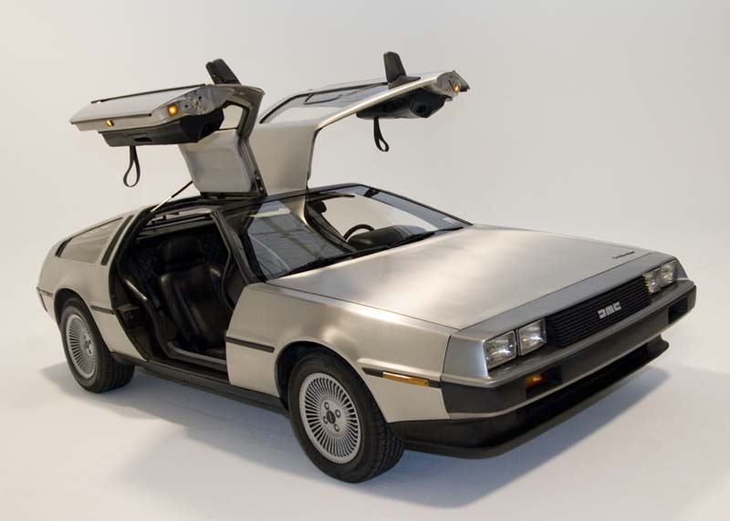

The DeLorean
How it really worked
The well known Deloran was not just classic car from back to the future but a failed car by Mr. Delorian. Many changes at to be taken to work the car into the movie; the engine had to be changed and replaced with a V6 Powertrain motor with a Porsche engine to help the car go faster. They even added aircraft parts to make the Deloran look like a time machine.
V6 Powertrain motor
DMC-12
Porsche engine
Special Affects
Remember to buckle up
- Computer graphics there was some CG but it was hard to use at the time becuase the team had build the car in CG.
- Cinematographers People who take photos and make animations to make tiny vertions of objects like their moveing.
Peter Stoltz
Models and Preps
How the team made the car "fly."
Computer Graphics(CG)
Animation on computer
Hard work but great outcomes.
Michael J. Fox
Green Screne
With editingng and acting anything such as huver boards can become real.
Sites
https://www.volocars.com/blog/history-of-the-back-to-the-future-delorean https://www.alltherightmovies.com/features/18-interesting-facts-about-back-to-the-future/